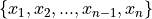
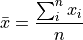

Point Estimation#
A sample of data is characterized by point estimates of sample statistics.
Definitions#
- Observation

A single piece of data. The subscript is called the index of the observation. If the sample is ordered, the index corresponds to the order in which the observation was made, i.e.
 is the first observation,
is the first observation,  is the second observation, etc.
is the second observation, etc.
- Sample

A collection, or set, of observations. The number of samples, n, is called the sample size.
- Frequency

The number of times a particular observation occurs in a sample of data.
Measures of Location#
Measures of location describe where a sample of data can be found.
Arithmetic Mean#
The arithmetic mean can be defined in two equivalent ways.
Sample Formula#
If the sample of data is specified as a set or list of data as in the following,

Then the sample arithmetic mean can be calculated with the formula,

- Example
TODO
TODO
Suppose in the sample of data S, some of the observations have identical values, such as in the following dataset that represents the age in years of an A.P Statistics student,
S = { 16, 16, 17, 18, 16, 17, 17, 17 }
In this case, the formula for the arithmetic mean gives,


Notice the first factor of each term in the numerator is simply frequency whereas the second factor is the value of the observation,

This recognization leads the following formula that comes in handy when sample distributions are given in terms of frequency distributions
Frequency Formula#
If the sample of data is specified as a frequency distribution as in the following,
x |
f(x) |
|---|---|
x 0 |
f( x 0) |
x 1 |
f( x 1) |
… |
… |
x n |
f( x n) |
Then the sample arithmetic mean can be calculated with the formula,

Geometric Mean#
The geometric mean is defined as,

TODO
Geometric vs. Arithmetic Mean#
TODO
Mode#
TODO
Percentiles#
TODO
Median#
TODO
Quartiles#
TODO
Measures of Variation#
Measures of variation characterize the spread and dispersion of a sample of data.
Interquartile Range#
TODO
Standard Deviation#
TODO
Variance#
TODO
Measures of Comparision#
Coefficient of Variation#

Z Score#

Outliers#
TODO
Rule of Thumb#
TODO
Chebyshev’s Theorem#
TODO